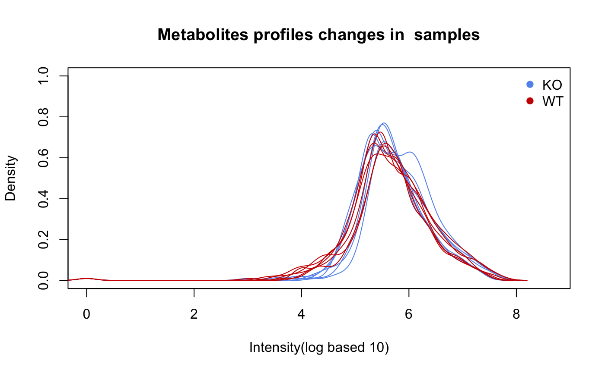
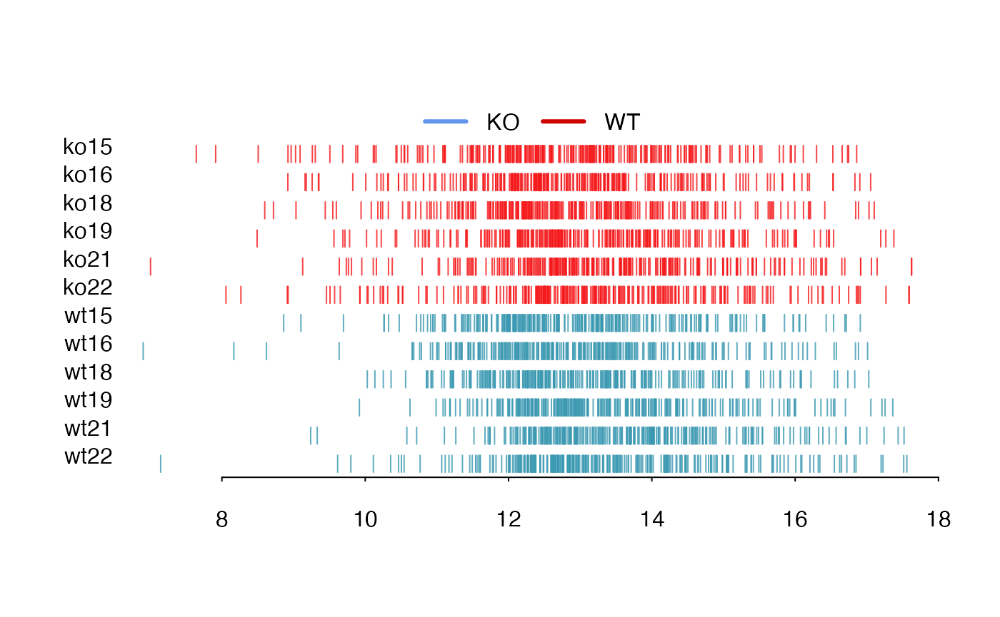
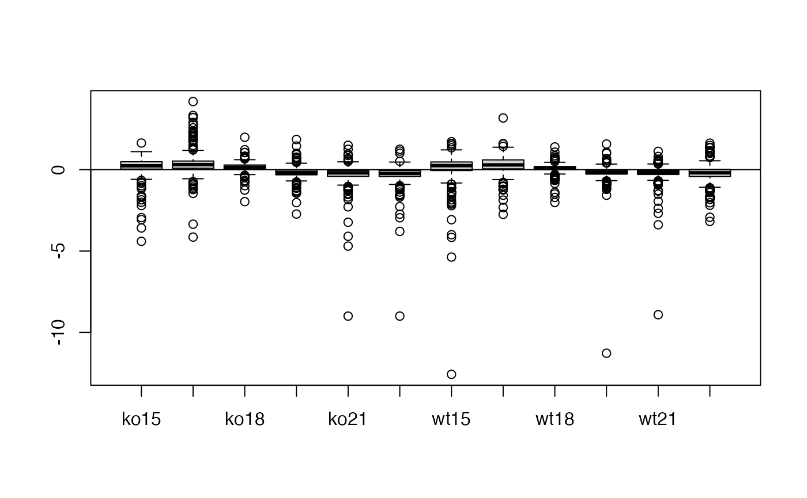
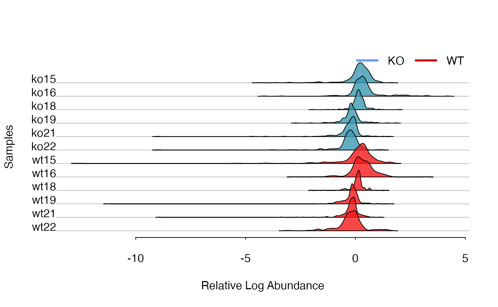
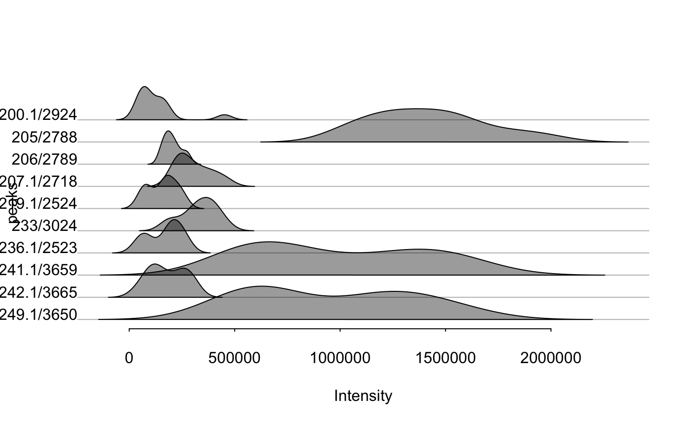
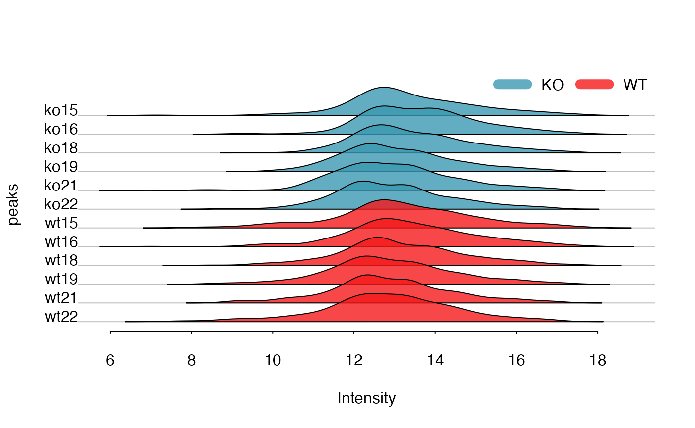
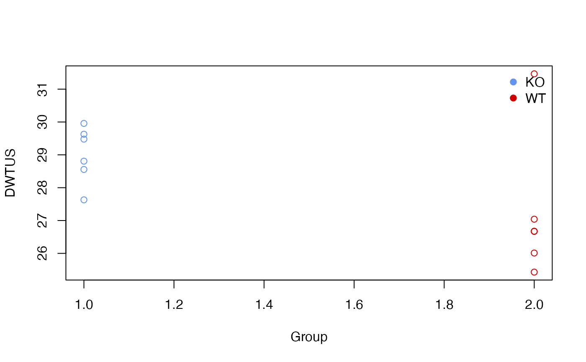

Pooled QC samples within injection sequences are very important to control the quality of untargeted analysis. I added some functions in enviGCMS package to visualize or analysis Pooled QC samples or other untargeted peaks profile.
Density distribution
For each sample, the peaks’ density distribution will tell us if certain samples show large shift.


Relative Log Abundance (RLA) plots
Relative Log Abundance (RLA) plots could be another way to show the intensity shift.

Relative Log Abundance Ridge (RLAR) plots
Relative Log Abundance Ridge (RLAR) plots could also be used to show the intensity shift.
data(list)
plotridges(list$data, as.factor(list$group$sample_group))


Density Weighted Total Usable Signal
The sum of all peaks’ intensity or total usable signal(TUS) could show the general trends for each sample while peaks with lower ionization energy will dominated such value. Here I introduced a density weighted TUS to make the values robust to low frequency high intensity peaks. You could use getdwtus to calculate DWTUS for samples.
\[DWTUS = \sum peak\ intensity * peak\ density\]
data(list)
apply(list$data,2,getdwtus)
#> ko15 ko16 ko18 ko19 ko21 ko22 wt15 wt16
#> 27.63040 29.95684 29.47828 28.80768 28.55539 29.62787 26.01125 26.66868
#> wt18 wt19 wt21 wt22
#> 25.42983 27.04065 26.67595 31.46668
plotdwtus(list)
Run order effect analysis
For LC/GC-MS analysis, the run order will affect the intensity of single peak until the instrument is stable. The intensity will decrease/increase with initial run order and researcher need to evaluate how many samples are enough to eliminated run order effects. Here I introduced a pooled QC linear index to show such trends in the sequence.

pqsi
As shown in above figure, for one peak repeated analyzed in one sequence, the intensity would become stable in long term. In math, the slope of every 5 samples along the run order would become 0. Then we could define the percentage of stable peaks as pooled QC index. Such index would be a value between 0 and 1. The higher of such index, more peaks within the QC would be affected by run order effect. You could use such function to check the QC samples to see if run order effects would influence the samples at the beginning of sequences.
order <- 1:12
# n means how many points to build a linear regression model
n = 5
idx <- getpqsi(list$data,order,n = n)
plot(idx~order[-(1:(n-1))],pch=19)In this case, we could see at 5th sample, 30% peaks show correlation with the run order. However, ever since 6th sample, the run order effects could be ignore.